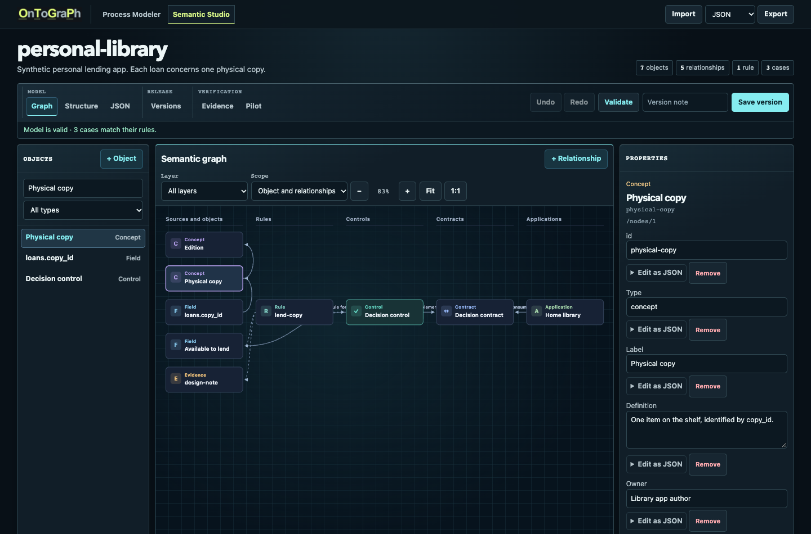
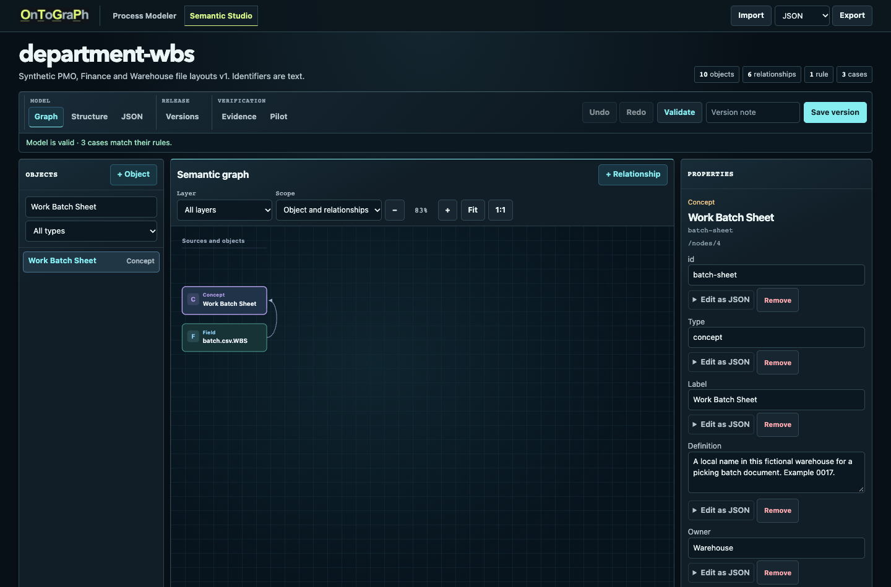

先选一个软件需要回答的问题。书架上哪一本书可以借出？财务导出文件里的 WBS 代表什么？围绕这个问题定义术语、关系和检查规则。架构拼图用于比较方案；实际模型在 Semantic Studio 中编辑。
安装 Git 和 Python 3.10 或更高版本后，克隆仓库并启动 Studio。已有本地仓库时，只需在仓库根目录执行最后一条命令。
git clone https://github.com/sev7enITA/OntoGraph.git
cd OntoGraph
python3 -m ontograph studio如果你解压了离线包，请先将两个 JSON 文件和 CSV
文件复制到仓库根目录下的
examples/adoption/（如有需要，请创建该目录）。
打开 Semantic
Studio。如果首页显示流程建模器，选择 Semantic
Studio 即可。在 Import（导入） 中选择 personal-library.json 或 department-wbs.json。在
Graph（图）
中查找并选中对象，查看定义、负责人、别名和关系。使用 +
Object 添加概念或字段，再使用 + Relationship
建立从字段到概念的 mapsTo 关系。Validate
检查结构和测试样例，Save version
将工作版本保存在当前浏览器中。通过 Export → JSON
保存包含规则和测试的模型文件，在 Versions
中比较修改。
copy_id。在图中查找
copy-id，查看借阅记录中的字段指向哪个概念。lend-copy。当所选藏书的 available
为真时，规则返回 allow。已借出或缺少可用状态时返回
hold。应用从自己的借阅记录中读取可用状态。physical-copy
的显示名称改为“馆藏单册”，保留概念 ID，验证并导出
JSON。让示例读取新文件。表单标签会变化，规则仍使用原来的
available 字段。向图工具提供数据时可导出
JSON-LD；下面的代码读取的是含规则和测试的发布 JSON。import json
from pathlib import Path
from ontograph.model import evaluate, validate
model = validate(json.loads(Path("examples/adoption/personal-library.json").read_text()))
nodes = {node["id"]: node for node in model["nodes"]}
print(nodes["physical-copy"]["label"])
rule = next(rule for rule in model["rules"] if rule["id"] == "lend-copy")
for copy_id, available in [("COPY-01", True), ("COPY-02", False)]:
print(copy_id, evaluate(rule, {"available": available}))
即使列名和值完全相同，不同部门也可能指向不同的业务对象。以下是三个虚构部门约定的用法。将
0017 作为文本读取，以保留前导零。
| 来源及负责人 | 文件、字段和值 | 本例中的含义 | 稳定概念 ID |
|---|---|---|---|
| PMO 进度系统 | schedule.csv / WBS / 0017 | 项目进度计划中的工作分解结构元素 | project-work-package |
| 财务 ERP | ledger.csv / WBS / 0017 | 用于会计过账的科目分配对象 | posting-object |
| 仓储系统 | batch.csv / WBS / 0017 | 本例仓库称为 Work Batch Sheet 的拣货批次单 | batch-sheet |
mapsTo
关系查看字段所指的概念。若要将具体的工作包和财务对象关联，还需要经负责人批准的业务对照表，记录项目、本地键、有效期及一对多等对应关系。一个工作包可能对应多个过账对象。schedule.csv / WBS / 0017
可进入暂存区，标记为
project-work-package / 0017。来源未知、只有 WBS
值的记录转为人工复核。若目标需要关联具体记录，对照表缺失或存在歧义时也应暂停关联。resolved。规则 admit-row 对真值返回
allow，对假值或缺失返回
hold。文件解析和记录匹配由集成作业执行。结合导入回执和目的系统的独立回读，核实哪些行实际写入。选择文件格式。 ERP 的业务 CSV 或 Excel 交给暂存作业。Studio 导入发布 JSON 或 OnToGraPh 语义工作簿。通过 Export → Excel 获取包含 Path、Type、Value 三列的工作簿。Studio 验证模型，企业集成流程负责作业调度、业务数据、对照表审批和目标系统回读。

一种可操作的发布方式是 SharePoint 列表。数据负责人将已批准字典的可读副本发布到列表，使用 Microsoft 身份验证的 Copilot 智能体再将列表作为知识源。此处采用手动发布。示例术语表 CSV 包含三条培训记录。
0017
的前导零。即使三行的 Title 都是
WBS，也应分别保留。在生产列表中加入负责人、审批状态、生效日期、真实发布版本及可访问的来源链接。知识源保留当前已批准的条目，停用条目单独归档，并按受众设置权限。| 向智能体提问 | 通过标准 |
|---|---|
| “WBS 是什么意思？” | 先确认部门、来源或文件，再选择定义。 |
| “财务 ledger.csv 中的 WBS 0017 指什么？” | 返回 posting-object 并引用术语表。要定位 ERP 中的具体过账记录还需要相应数据和权限。 |
| “仓库 batch.csv 中的 WBS 是什么？” | 返回 batch-sheet 并引用仓库定义。 |
| “PMO 和财务都导出了 0017，可以关联这两行吗？” | 要求提供经批准的项目对照表。 |
| 无权限的用户询问仓库内部定义 | 避免透露受限定义或记录内容。 |
试点可分别计算：概念及引文正确的回答数占明确问题数的比例；提出澄清的问题数占歧义问题数的比例；未授权披露数占权限拒绝测试数的比例。在连接术语表之前和之后，用相同角色重测相同问题，并保留租户中实际得到的回答。